Introduction to scCulturePredict
Niccolò Bianchi
2025-09-11
Source:vignettes/scCulturePredict-introduction.Rmd
scCulturePredict-introduction.RmdIntroduction
The scCulturePredict package provides a comprehensive
pipeline for analyzing single-cell RNA sequencing data from yeast
culture experiments. It enables researchers to:
- Identify cell culture conditions from transcriptomic profiles
- Build predictive models using pathway fingerprints
- Analyze pathway activity patterns across different conditions
- Support both 10X Genomics and SingleCellExperiment data formats
This vignette provides an introduction to the main functionality of the package.
Installation
The scCulturePredict package is available on
Bioconductor and can be installed using:
if (!requireNamespace("BiocManager", quietly = TRUE))
install.packages("BiocManager")
BiocManager::install("scCulturePredict")Working with Example Data
Creating Mock Data for Demonstration
For this vignette, we’ll create simple mock data to demonstrate the package functionality:
# Create simple mock Seurat object
create_simple_seurat <- function(n_genes = 200, n_cells = 100) {
# Create count matrix
counts <- matrix(rpois(n_genes * n_cells, lambda = 5),
nrow = n_genes, ncol = n_cells)
# Use simple gene names to avoid duplicates
rownames(counts) <- paste0("Gene", seq_len(n_genes))
colnames(counts) <- paste0("Cell", seq_len(n_cells))
# Create metadata
metadata <- data.frame(
sample = rep(c("DMSO", "Guanine", "Adenine", "Thymine"),
length.out = n_cells),
batch = rep(c("Batch1", "Batch2"), each = n_cells/2),
row.names = colnames(counts)
)
# Create Seurat object
seurat_obj <- CreateSeuratObject(
counts = counts,
meta.data = metadata,
min.cells = 3,
min.features = 10
)
return(seurat_obj)
}
# Create our mock data
seurat_data <- create_simple_seurat(n_genes = 200, n_cells = 100)
print(seurat_data)
#> An object of class Seurat
#> 200 features across 100 samples within 1 assay
#> Active assay: RNA (200 features, 0 variable features)
#> 1 layer present: countsCore Functions
Data Preprocessing
The preprocess_data function normalizes and scales the
data:
# Preprocess the data
seurat_processed <- preprocess_data(
seurat_obj = seurat_data,
n_features = 100,
verbose = TRUE
)
print(paste("Number of variable features:",
length(VariableFeatures(seurat_processed))))
#> [1] "Number of variable features: 100"Dimensionality Reduction
The reduce_dimensions function performs PCA and
UMAP:
# First run PCA (required for UMAP)
seurat_processed <- RunPCA(seurat_processed,
features = VariableFeatures(seurat_processed),
npcs = 20,
verbose = FALSE)
# Perform dimensionality reduction
seurat_reduced <- reduce_dimensions(
seurat_object = seurat_processed,
perform_tsne = FALSE,
verbose = TRUE
)
# Check that UMAP coordinates were added
if(all(c("UMAP_1", "UMAP_2") %in% colnames(seurat_reduced@meta.data))) {
print("UMAP coordinates successfully added")
} else {
# If not added by reduce_dimensions, compute manually
seurat_reduced <- RunUMAP(seurat_reduced, dims = 1:10, verbose = FALSE)
seurat_reduced@meta.data$UMAP_1 <- Embeddings(seurat_reduced, "umap")[, 1]
seurat_reduced@meta.data$UMAP_2 <- Embeddings(seurat_reduced, "umap")[, 2]
}
#> [1] "UMAP coordinates successfully added"Visualization
# Visualize UMAP
if(all(c("UMAP_1", "UMAP_2") %in% colnames(seurat_reduced@meta.data))) {
p <- ggplot(seurat_reduced@meta.data,
aes(x = UMAP_1, y = UMAP_2, color = sample)) +
geom_point(size = 2, alpha = 0.7) +
theme_minimal() +
labs(title = "UMAP of Mock Single-Cell Data",
x = "UMAP 1", y = "UMAP 2",
color = "Condition") +
scale_color_brewer(palette = "Set1")
print(p)
}
Pathway Analysis
For pathway analysis, we can create mock pathway data:
# Create mock KEGG pathways
mock_pathways <- list(
Glycolysis = paste0("Gene", 1:20),
TCA_Cycle = paste0("Gene", 21:40),
Oxidative_Phosphorylation = paste0("Gene", 41:60),
Amino_Acid_Metabolism = paste0("Gene", 61:80),
Lipid_Metabolism = paste0("Gene", 81:100)
)
# Build pathway fingerprints
pathway_matrix <- build_fingerprints(
seurat_object = seurat_reduced,
kegg_pathways = mock_pathways,
verbose = TRUE
)
# Check the results
if (!is.null(pathway_matrix)) {
print(paste("Pathway matrix dimensions:",
nrow(pathway_matrix$pathway_matrix), "cells x",
ncol(pathway_matrix$pathway_matrix), "pathways"))
# Show first few entries
if (ncol(pathway_matrix$pathway_matrix) >= 3) {
print(head(pathway_matrix$pathway_matrix[, 1:3], n = 3))
} else {
print(head(pathway_matrix$pathway_matrix, n = 3))
}
}
#> [1] "Pathway matrix dimensions: 100 cells x 5 pathways"
#> Glycolysis TCA_Cycle Oxidative_Phosphorylation
#> Cell1 3.911183 3.931327 3.692737
#> Cell2 3.822013 3.849662 3.931132
#> Cell3 3.794458 3.846716 3.798572Prediction
We can demonstrate the prediction functions:
# Use pathway matrix for predictions if available
if (!is.null(pathway_matrix) && nrow(pathway_matrix$pathway_matrix) > 20) {
# Make predictions using SVM
svm_results <- predict_by_svm(
pathway_matrix = pathway_matrix$pathway_matrix,
seurat_object = seurat_reduced,
verbose = TRUE
)
# Check results
if (!is.null(svm_results$predictions)) {
seurat_reduced$predicted_sample <- svm_results$predictions
# Calculate accuracy
actual <- seurat_reduced$sample
predicted <- seurat_reduced$predicted_sample
accuracy <- sum(actual == predicted) / length(actual)
print(paste("Prediction accuracy:", round(accuracy * 100, 2), "%"))
# Show confusion matrix
print("Confusion Matrix:")
print(table(Actual = actual, Predicted = predicted))
}
}
#> [1] "Prediction accuracy: 57 %"
#> [1] "Confusion Matrix:"
#> Predicted
#> Actual Adenine DMSO Guanine Thymine
#> Adenine 17 2 4 2
#> DMSO 4 15 5 1
#> Guanine 5 1 19 0
#> Thymine 5 2 12 6Evaluation
Evaluate the prediction results:
# Evaluate predictions if they exist
if ("predicted_sample" %in% colnames(seurat_reduced@meta.data)) {
# Calculate evaluation metrics
actual <- seurat_reduced$sample
predicted <- seurat_reduced$predicted_sample
# Overall accuracy
overall_acc <- sum(actual == predicted, na.rm = TRUE) / length(actual)
# Per-class accuracy
classes <- unique(actual)
class_acc <- sapply(classes, function(cls) {
idx <- actual == cls
sum(actual[idx] == predicted[idx], na.rm = TRUE) / sum(idx)
})
# Display results
print("Evaluation Results:")
print(paste("Overall accuracy:", round(overall_acc * 100, 2), "%"))
print("Per-class accuracy:")
acc_df <- data.frame(
Class = classes,
Accuracy = round(class_acc * 100, 2)
)
print(acc_df)
}
#> [1] "Evaluation Results:"
#> [1] "Overall accuracy: 57 %"
#> [1] "Per-class accuracy:"
#> Class Accuracy
#> DMSO DMSO 60
#> Guanine Guanine 76
#> Adenine Adenine 68
#> Thymine Thymine 24Working with Different Data Formats
SingleCellExperiment Format
The package also supports SingleCellExperiment objects:
# Convert to SingleCellExperiment
sce_data <- as.SingleCellExperiment(seurat_reduced)
print(sce_data)
#> class: SingleCellExperiment
#> dim: 200 100
#> metadata(0):
#> assays(2): counts logcounts
#> rownames(200): Gene1 Gene2 ... Gene199 Gene200
#> rowData names(0):
#> colnames(100): Cell1 Cell2 ... Cell99 Cell100
#> colData names(9): orig.ident nCount_RNA ... predicted_sample ident
#> reducedDimNames(2): PCA UMAP
#> mainExpName: RNA
#> altExpNames(0):
# The package functions work with both formats
# For loading SCE data from file, you would use:
# sce_data <- load_sce_data("path/to/sce.rds")Complete Pipeline with scCulture
For a complete analysis pipeline, the scCulture function
combines all steps:
# Example of using scCulture with real data
# This example is not evaluated as it requires actual data files
# For 10X Genomics data:
results <- scCulture(
mode = "build",
tenx_data_dir = "path/to/10x/data",
input_type = "10x",
experiment_id = "my_experiment",
output_dir = "./results",
verbose = TRUE
)
# For SingleCellExperiment data:
results <- scCulture(
mode = "build",
sce_data_path = "path/to/sce.rds",
input_type = "sce",
experiment_id = "my_experiment",
output_dir = "./results",
verbose = TRUE
)
# Access results
seurat_object <- results$seurat_object
pathway_results <- results$pathway_results
prediction_results <- results$prediction_resultsTips for Using scCulturePredict
Data Requirements: Ensure your data has sufficient cells (>50) and genes (>100) for reliable analysis.
KEGG Pathways: The package includes example KEGG pathway data. For real analysis, use organism-specific pathway databases.
Parameter Tuning: Adjust parameters like
n_featuresin preprocessing andtrain_ratioin prediction based on your dataset size.Cross-validation: For robust results, consider using cross-validation when building predictive models.
Session Information
sessionInfo()
#> R version 4.5.1 (2025-06-13)
#> Platform: x86_64-pc-linux-gnu
#> Running under: Ubuntu 24.04.3 LTS
#>
#> Matrix products: default
#> BLAS: /usr/lib/x86_64-linux-gnu/openblas-pthread/libblas.so.3
#> LAPACK: /usr/lib/x86_64-linux-gnu/openblas-pthread/libopenblasp-r0.3.26.so; LAPACK version 3.12.0
#>
#> locale:
#> [1] LC_CTYPE=C.UTF-8 LC_NUMERIC=C LC_TIME=C.UTF-8
#> [4] LC_COLLATE=C.UTF-8 LC_MONETARY=C.UTF-8 LC_MESSAGES=C.UTF-8
#> [7] LC_PAPER=C.UTF-8 LC_NAME=C LC_ADDRESS=C
#> [10] LC_TELEPHONE=C LC_MEASUREMENT=C.UTF-8 LC_IDENTIFICATION=C
#>
#> time zone: UTC
#> tzcode source: system (glibc)
#>
#> attached base packages:
#> [1] stats4 stats graphics grDevices utils datasets methods
#> [8] base
#>
#> other attached packages:
#> [1] ggplot2_3.5.2 SingleCellExperiment_1.30.1
#> [3] SummarizedExperiment_1.38.1 Biobase_2.68.0
#> [5] GenomicRanges_1.60.0 GenomeInfoDb_1.44.2
#> [7] IRanges_2.42.0 S4Vectors_0.46.0
#> [9] BiocGenerics_0.54.0 generics_0.1.4
#> [11] MatrixGenerics_1.20.0 matrixStats_1.5.0
#> [13] Seurat_5.3.0 SeuratObject_5.2.0
#> [15] sp_2.2-0 scCulturePredict_0.99.32
#> [17] BiocStyle_2.36.0
#>
#> loaded via a namespace (and not attached):
#> [1] RColorBrewer_1.1-3 jsonlite_2.0.0 magrittr_2.0.3
#> [4] spatstat.utils_3.1-5 farver_2.1.2 rmarkdown_2.29
#> [7] fs_1.6.6 ragg_1.5.0 vctrs_0.6.5
#> [10] ROCR_1.0-11 spatstat.explore_3.5-2 htmltools_0.5.8.1
#> [13] S4Arrays_1.8.1 SparseArray_1.8.1 sass_0.4.10
#> [16] sctransform_0.4.2 parallelly_1.45.1 KernSmooth_2.23-26
#> [19] bslib_0.9.0 htmlwidgets_1.6.4 desc_1.4.3
#> [22] ica_1.0-3 plyr_1.8.9 plotly_4.11.0
#> [25] zoo_1.8-14 cachem_1.1.0 igraph_2.1.4
#> [28] mime_0.13 lifecycle_1.0.4 pkgconfig_2.0.3
#> [31] Matrix_1.7-3 R6_2.6.1 fastmap_1.2.0
#> [34] GenomeInfoDbData_1.2.14 fitdistrplus_1.2-4 future_1.67.0
#> [37] shiny_1.11.1 digest_0.6.37 patchwork_1.3.2
#> [40] tensor_1.5.1 RSpectra_0.16-2 irlba_2.3.5.1
#> [43] textshaping_1.0.3 labeling_0.4.3 progressr_0.15.1
#> [46] spatstat.sparse_3.1-0 polyclip_1.10-7 httr_1.4.7
#> [49] abind_1.4-8 compiler_4.5.1 proxy_0.4-27
#> [52] withr_3.0.2 fastDummies_1.7.5 MASS_7.3-65
#> [55] DelayedArray_0.34.1 tools_4.5.1 lmtest_0.9-40
#> [58] httpuv_1.6.16 future.apply_1.20.0 goftest_1.2-3
#> [61] glue_1.8.0 nlme_3.1-168 promises_1.3.3
#> [64] grid_4.5.1 Rtsne_0.17 cluster_2.1.8.1
#> [67] reshape2_1.4.4 gtable_0.3.6 spatstat.data_3.1-8
#> [70] class_7.3-23 tidyr_1.3.1 data.table_1.17.8
#> [73] XVector_0.48.0 spatstat.geom_3.5-0 RcppAnnoy_0.0.22
#> [76] ggrepel_0.9.6 RANN_2.6.2 pillar_1.11.0
#> [79] stringr_1.5.2 spam_2.11-1 RcppHNSW_0.6.0
#> [82] later_1.4.4 splines_4.5.1 dplyr_1.1.4
#> [85] lattice_0.22-7 deldir_2.0-4 survival_3.8-3
#> [88] tidyselect_1.2.1 miniUI_0.1.2 pbapply_1.7-4
#> [91] knitr_1.50 gridExtra_2.3 bookdown_0.44
#> [94] scattermore_1.2 xfun_0.53 stringi_1.8.7
#> [97] UCSC.utils_1.4.0 lazyeval_0.2.2 yaml_2.3.10
#> [100] evaluate_1.0.5 codetools_0.2-20 tibble_3.3.0
#> [103] BiocManager_1.30.26 cli_3.6.5 uwot_0.2.3
#> [106] xtable_1.8-4 reticulate_1.43.0 systemfonts_1.2.3
#> [109] jquerylib_0.1.4 Rcpp_1.1.0 spatstat.random_3.4-1
#> [112] globals_0.18.0 png_0.1-8 spatstat.univar_3.1-4
#> [115] parallel_4.5.1 pkgdown_2.1.3 dotCall64_1.2
#> [118] listenv_0.9.1 viridisLite_0.4.2 e1071_1.7-16
#> [121] scales_1.4.0 ggridges_0.5.7 purrr_1.1.0
#> [124] crayon_1.5.3 rlang_1.1.6 cowplot_1.2.0